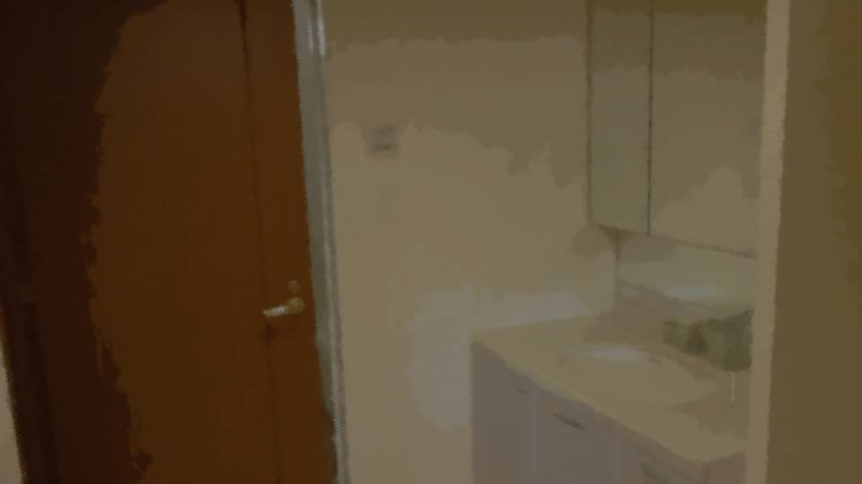

← All scenes
Other scripts
Script 00001BD4
4 boxes · not part of the scene list (menus, tutorial, system)

「もうだいぶ貯まったし、そろそろ仕事先にも言わないとね」
「あれ？ まだ使い捨てのがあったはずなんだけどな」
「あ、1つだけあった。2つないと意味ないんだけどな……。 まあ、いいか。つけてても大して変わらないって言われるし」
「っていうか、1つだけなくなるって普通ありえない。 もしかして……
あの子
……」